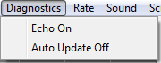
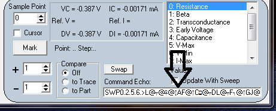

Echo On: Echos the serial text
commands sent to and received from Mini_CT. The text is displayed in
the text edit box located in the lower right corner of the form. Use
this to diagnose communication problems or when testing modifications
to the application program.

Auto Update Off: To keep the
program informed of switch setting changes to Mini_CT, a switch setting
command is sent every 1/2 second. When a script file is running or the
Live sweep mode box is checked, Auto Update is not invoked. Every Sweep
command returns the switch settings. Turn Auto Update off to prevent
overwriting of commands displayed by Echo.
Main